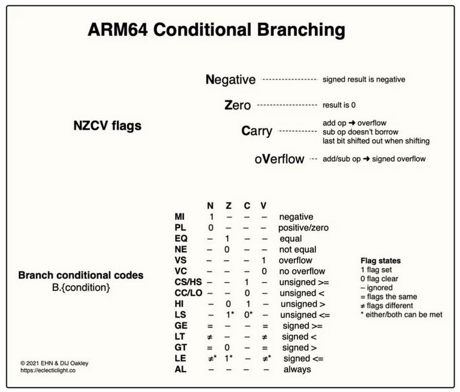

AArch64 Tutorial
Table of Contents
1. AArch64 Tutorial
Armv8-A Instruction Set Architecture
Cortex-A Series Programmer’s Guide for ARMv8-A
ARM Architecture Reference Manual for ARMv8-A architecture profile
1.1. AArch64 Assembly
1.1.1. Register
31 个 64 bits GPR (X0~X30)
w0 对应 x0 的低 32 位, w1 对应 x1 的低 32 位, 并不存对应 x0 的高 32位的寄存器, 因为 Wd 为 w0 的指令会将 x0 的高 32 位清零
- X0~X7 用作函数调用时的参数
- X8 称为 XR, 在函数调用时用来保存要返回的结构体的地址
- X9~X15 是 caller saved
- X19~X28 是 callee saved
- X29 是 FP
- X30 是 LR
不存在 X31 或 W31
XZR (64bit zero 寄存器), WZR (32 bit zero 寄存器) 以及 SP 都编码为 31
虽然 SP 和 XZR 编码都为 31, 但并不会有冲突, 例如:
add x0, xzr, x1 add x0, sp, x1
对应的编码为:
8b0103e0 add x0, xzr, x1 8b2163e0 add x0, sp, x1
第一条对应 `ADD (shifted register)`, 第二条对应 `ADD (extended register)`, 这两类指令有不同的指令编码格式, 虽然 xzr/sp 都编码为 31, 即 `3e0` (0b1111100000) 中的 `11111`
另外, load/store 类指令通常不会用 zero 做 base, 所以这类指令中 31 会被编码为 sp 而不是 xzr
32 个 128 bits 向量寄存器 (V0~V31)
通过 V{d}.{T} 访问向量寄存器, 例如 V0.2d, 其中 T 表示 Vd 寄存器中的数据如何解释:
- 8B, 表示使用 Vd 的低 64 bit, 表示 8 个 byte
- 16B, 表示使用 Vd 的整个 128 bit, 表示 8 个 byte
- 4H/8H, 4 个或 8 个 int16 或 fp16
- 2S/4S, 2 个或 4 个 int32 或 float
- 2D, 2 个 int64 或 double
即向量寄存器可以用来表示多个定点数或浮点数, 总共可以使用 64 bit 或 128 bit
同时向量寄存器也可以做为单个 FPR 使用, 其中 {H,S,D}0 对应 V0 的低 {16,32,64} 位, H 代表 half float, S 代表 float, D 代表 double.
在函数调用时 d0/s0~d7/s7 用作参数, d8~d31 是 callee-saved register
1.1.2. instructions
1.1.2.1. arith
1.1.2.1.1. ADD
- ADD (extended register)
ADD <Xd|SP>, <Xn|SP>, <R><m>{, <extend> {#<amount>}}<Xd|SP>表示 rd 是 64 位 GPR(X0~X30) 或 SP<Xn|SP>表示 rs1 是 64 位 GPR 或 SP<R><m>表示 rs2 是寄存器 (R, 可以是 X 或 W), 例如 X30, W30 或 XZR…<extend>表示 rs2 需要先经过哪种扩展#<amount>表示 rs2 扩展后还需要经过 left shift
mov x0, #1 mov x1, #0b101111111 # x1 通过 UXTB 后变为 0b01111111 # x1 通过 lsl 1 变为 0b11111110 # x0=x1+1 即 0b11111111 add x0, x0, x1, UXTB #1
int64_t foo(int64_t x, int y) { return x + ((int64_t)y << 1); } foo: add x0, x0, w1, sxtw 1 ret - ADD (shifted register)
ADD <Xd>, <Xn>, <Xm>{, <shift> #<amount>}<Xd>表示 rd 是 64 位 GPR (X0~X30) 或 XZR
mov x1, #0b10 # x1 lsr #1 为 0b1 # x0 为 xzr+0b1=0b1 add x0, xzr, x1, lsr #1
int64_t foo(int64_t x, int64_t y) { return x + (y >> 1); } foo: add x0, x0, x1, asr 1 ret - ADD (immediate)
ADD <Xd|SP>, <Xn|SP>, #<imm>{, <shift>}#<imm>是 12 位的 unsigned imm, 所以无法支持负数, 但 as 支持打负数的 add 转换为 sub- shift 只能是默认的
lsl #0或lsl #12, 类似于 RISC-V 的 lui 指令 - Rn 支持 SP, 所以不能使用 XZR
# 91000420 add x0, x1, #0x1 add x0, x1, #1, lsl #0 # d1400420 sub x0, x1, #0x1, lsl #12 # add 负数会变成 sub add x0, x1, #-1, lsl #12
int64_t foo(int64_t x, int64_t y) { return x + (4 << 12); } foo: 0 add x0, x0, #0x4, lsl #12 4 ret - ADDS
上面三个 ADD 都有对应的 ADDS, 会根据 Rd 的值设置 NZCV (Negative, Zero, Carry, oVerflow) 值. 算术和逻辑运算都可以加 S 后缀表示运算会影响 NZCV
mov x0, #-2 mov x1, #1 adds x0, x0, x1 # x2 为 0x80000000, 因为 N bit 被置位 mrs x2, nzcv
int foo(int a, int b) { return (a >= (-4) << 13); } foo: 0 cmn w0, #0x8, lsl #12 4 cset w0, ge // ge = tcont 8 ret - CMP
CMP 实际上是使用 SUBS 实现的伪指令, 以 CMP (immediate) 为例:
CMP <Xn|SP>, #<imm>{, <shift>}相当于SUBS XZR, <Xn|SP>, #<imm> {, <shift>}B.cond 会根据 CMP 设置的 NZCV 来跳转
- CMN
CoMpare Negative 是使用 ADDS 实现的伪指令, 以 CMN(immediate) 为例:
CMN <Xn|SP>, #<imm>{, <shift>}相当于ADDS XZR, <Xn|SP>, #<imm> {, <shift>}相当于拿 Xn 和 -imm 做 SUBS, 所以称为 compare negative
- ADC
add with carry
gcc 用两个 int64 模拟 __int128 的加法时, 会用到 ADC 指令
__int128 foo(__int128 a, __int128 b) { return a + b; } foo: adds x0, x0, x2 adc x1, x1, x3 retRISC-V 则需要手动处理进位
foo: mv a5,a0 add a0,a0,a2 sltu a5,a0,a5 add a1,a1,a3 add a1,a5,a1 ret
1.1.2.1.2. SUB/NEG
1.1.2.1.3. MUL/SMULL/UMULL
#include <stdint.h>
int64_t foo(int32_t a, int32_t b) { return (int64_t)a * b; }
uint64_t foo2(uint32_t a, uint32_t b) { return (uint64_t)a * b; }
foo:
0 smull x0, w0, w1
4 ret
foo2:
10 umull x0, w0, w1
14 ret
UMULL/SMULL 使得输入不需要做 sext/zext, 对比 RISC-V:
foo2:
slli a0,a0,32
slli a1,a1,32
srli a1,a1,32
srli a0,a0,32
mul a0,a0,a1
ret
1.1.2.1.4. MADD
int32_t foo(int32_t a, int32_t b, int32_t c) { return a + b * c; }
foo:
madd w0, w1, w2, w0
ret
1.1.2.1.5. SDIV/UDIV
1.1.2.2. ADR
ADR <Xd>, <label>
- 汇编时会把 label 与 pc 的差表示为一个 21 bit 的 signed int (+/-1M)
- 运行时 pc 加上这个值可以得到 label 的地址
# _start 地址为 0x4000d8 _start: # x0 的值为 0x4000d9 adr x0, 1
ADR 用于小范围的 pc 相对寻址, RISC-V 并没有对应的指令
$> cat test.c
int foo() { return &foo; }
$> arm-gcc test.c -O3 -mcmodel=tiny
$> arm-objdump -d test.o
foo:
0 adr x0, 0 <foo>
4 ret
正常情况下 gcc 取 symbol 地址会使用 `adrp+add`. 通过 -mcmodel=tiny, 表明 symbol
地址在 pc-relative 1MB 范围内, 可以使用 `adr` 指令
1.1.2.3. 关于 cmodel
arm 有三种 cmodel, 默认为 small
tiny
symbol 距离较小, 可以使用 `adr` 指令来加载 symbol 地址
small
symbol 距离较大, 需要使用 `adrp+add`
large
symbol 距离很大, 需要使用 literal pool 做跳板
$> cat test.c
int foo() { return &foo; }
$> arm-gcc -O3 -mcmodel=tiny -c
$> arm-objdump -dr test.o
0000000000000000 <foo>:
0: 10000000 adr x0, 0 <foo>
0: R_AARCH64_ADR_PREL_LO21 foo
4: d65f03c0 ret
$> arm-gcc -O3 -mcmodel=small -c
$> arm-objdump -dr test.o
0000000000000000 <foo>:
0: 90000000 adrp x0, 0 <foo>
0: R_AARCH64_ADR_PREL_PG_HI21 foo
4: 91000000 add x0, x0, #0x0
4: R_AARCH64_ADD_ABS_LO12_NC foo
8: d65f03c0 ret
$> arm-gcc -O3 -mcmodel=large -fno-PIC
$> arm-objdump -dr test.o
0000000000000000 <foo>:
0: 90000000 adrp x0, 0 <foo>
0: R_AARCH64_ADR_PREL_PG_HI21 .text+0x10
4: b9400000 ldr w0, [x0]
4: R_AARCH64_LDST32_ABS_LO12_NC .text+0x10
8: d65f03c0 ret
c: d503201f nop
...
10: R_AARCH64_ABS64 foo
做为对比, RISC-V 的 cmodel 有 medlow 和 medany 两种, 区别在于使用 lui 还是 auipc
1.1.2.4. ADRP (ADR Page)
ADRP <Xd>, <label>
- 汇编时获得 label 所在的 page, 和 pc 所在 page 做差后保存 21 bit 的 signed int.
- 执行时把 pc 所在 page 加上这个值得到 label 所在 page
所以 ADRP 与 RISC-V 的 auipc 功能类似但并不相同.
# _start 地址为 0x4000d4 _start: # x0 为 0x400000 adrp x0, _start
通过 adrp+add, 可以定位 pc+/-4G 的符号, 和 RISC-V 的 auipc+add 作用类似:
_start: adrp x0, _start # :lo12: 类似于 RISC-V gas 的 %lo # x0 等于 _start 地址 add x0, x0, :lo12:_start
gcc 针对全局符号访问会生成 adrp+add, 和 RISC-V 的 auipc+add 一样:
int x;
int foo () {
return x;
}
0000000000000000 <foo>:
0: 90000000 adrp x0, 0 <foo>
0: R_AARCH64_ADR_PREL_PG_HI21 x
4: 91000000 add x0, x0, #0x0
4: R_AARCH64_ADD_ABS_LO12_NC x
8: b9400000 ldr w0, [x0]
c: d65f03c0 ret
1.1.2.5. Logical
1.1.2.5.1. AND (immediate)
AND <Xd|SP>, <Xn>, #<imm>
- 汇编时需要把 imm 编码成 bitmask 的形式 (encoding-of-immediate-values-on-aarch64), 并不是所有 imm 都可以被编码
imm 需要满足如下的格式:
- imm 是某个长度为 (2,4,8,16,32,64) 的 patten 的重复, 例如 0x0110011001100110… 是 0110 这个长度为 4 的 patten 重复
patten 只能包含连续的 1, 或者能由连续的 1 通过循环右移得到, 例如 0110, 1001 是合法的 patten, 但 0101 不是
# 4位的 0b0011 循环右移一位, 重复 8 次 and w0, w0, #0x99999999 # 32位的 0x00000006, 不移位, 不重复 and x0, x0, #0x6
1.1.2.5.2. AND (shifted register)
AND <Xd>, <Xn>, <Xm>{, <shift> #<amount>}
1.1.2.5.3. ORR
or
1.1.2.5.4. EOR
Exclusive OR, 异或
1.1.2.5.5. MVN
not
1.1.2.5.6. TST
TST <Xn>, #<imm> 即 ANDS XZR, <Xn>, #<imm>
int foo(int x, int y) {
if (x & 0x3) {return x;}
return y;
}
int bar(int x, int y) {
if (x & 0x5) {return x;}
return y;
}
foo:
tst x0, 3
csel w0, w1, w0, eq
ret
bar:
mov w2, 5
tst w0, w2
csel w0, w1, w0, eq
ret
1.1.2.5.7. BIC
BIC <Xd>, <Xn>, <Xm>{, <shift> #<amount>}
Xn 中与 Xm 掩码对应的 bit 被 clear, BIC 不支持 imm
int foo(int x, int y) { return x & ~(y << 2); }
foo:
bic w0, w0, w1, lsl 2
ret
1.1.2.5.8. ORN
ORN <Xd>, <Xn>, <Xm>{, <shift> #<amount>}
Rd = Rn OR NOT shift(Rm, amount)
int foo(int x, int y) { return x | ~(y >> 2); }
foo:
orn w0, w0, w1, asr 2
ret
1.1.2.6. Bit
1.1.2.6.1. ASR
算术右移
register
ASR <Xd>, <Xn>, <Xm>immediate
ASR <Xd>, <Xn>, #<shift>shift 范围为 0~63
1.1.2.6.2. LSR
1.1.2.6.3. LSL
1.1.2.6.4. ROR
循环右移
uint64_t foo(uint64_t x) { return x >> 8 | x << 56; }
foo:
ror x0, x0, 8
ret
上述优化只适用于 unsigned int, 因为 `x>>8` 必须是逻辑右移才与 ror 等价
1.1.2.6.5. UBFX/SBFX
Unsigned BitField eXtract
UBFX <Xd>, <Xn>, #<lsb>, #<width>
假设 X0 为 0b0000000 0101011 000110100001110100
为了取出 0101011 部分, 需要用 `UBFX X1, X0, #18, #7`
若使用 SBFX, 则取出部分的最高位会作为符号位做符号扩展
uint32_t foo(uint32_t x) { return (x >> 8) & 0xf; }
foo:
ubfx x0, x0, 8, 4
ret
1.1.2.6.6. BFI
BitField Insert, leaving other bits unchanged
BFI <Xd>, <Xn>, #<lsb>, #<width>
把 Xn 插入到 Xd[lsb+width:lsb] 位置, 假设 X0 为 0x1234, X1 为 0xabcd, 则 `bfi x0, x1, #4, #16` 后 X0 为 0xabcd4
uint32_t foo(uint32_t x, uint32_t y) { return (x & ~0xf0) | ((y << 4) & 0xf0); }
foo:
bfi w0, w1, 4, 4
ret
1.1.2.6.7. UXTB/SXTB/UXTH/SXTH/SXTW
UXTB: Unsigned eXTend Byte SXTH: Signed eXTend Halfword
SXTH <Xd>, <Wn>
不存在 UXTW, 因为可以用 `MOV Wd, Wn` 代替: 操作 Wd 时 Xd 的高 32 位会清零
1.1.2.6.8. REV/REV16/REV32
- REV 是 reverse byte, 例如 rev(0x1234abcd) 结果为 0xcdab3412
- REV16 是以 16 bit 一组做 reverse byte, 例如 rev16(0x1234abcd) 结果为 0x3412cdab
#include <stdint.h>
uint32_t foo(uint32_t x) {
return ((x >> 24) & 0x000000FF) | ((x >> 8) & 0x0000FF00) |
((x << 8) & 0x00FF0000) | ((x << 24) & 0xFF000000);
}
foo:
rev w0, w0
ret
__builtin_bswap 对应 rev, 但 __builtin__bswap32/__builtin__bswap16 并非直接对应 rev32/rev16, 因为它们只会 swap 低 32/16 位, 而不是每 32/16 位一组, 例如:
uint32_t foo(uint32_t x) {
return __builtin_bswap16(x);
}
foo:
rev16 w0, w0
and w0, w0, 65535
ret
1.1.2.6.9. CLZ
count leading zero bits
int foo(int a) { return __builtin_clz(a); }
foo:
clz w0, w0
ret
1.1.2.6.10. RBIT
reberse bit order
arm 没有提供 ctz (count trailing zero bits), 可以通过 RBIT 和 clz 实现
int foo(int a) { return __builtin_ctz(a); }
foo:
rbit w0, w0
clz w0, w0
ret
1.1.2.7. Branch
1.1.2.7.1. B/BL
B <label>
BL <label>
无条件相对跳转, 类似于 RISC-V 的 jal.
B 指令不需要编码 link register, BL 会隐式的使用 LR (X30), 所以指令不需要编码返回地址寄存器, 因此 imm 的地址可以达到 26 位带符号数(而不是 jal 的 20 位)
1.1.2.7.2. BR/BLR
BR <Xn>
BLR <Xn>
相当于 RISC-V 的 jalr.
一个典型的需要使用 BR/BLR 的场景是 plt:
00000000000004b0 <bar@plt>: 4b0: b0000090 adrp x16, 11000 <__cxa_finalize> 4b4: f9400611 ldr x17, [x16, #8] 4b8: 91002210 add x16, x16, #0x8 4bc: d61f0220 br x17
1.1.2.7.3. B.cond
B.<cond> <label>

label 为 imm19, 而 RISC-V 的 blt 类指令的 label 为 imm12, 因为 B.cond 不需要在指令中编码要比较的寄存器
1.1.2.7.4. CBZ/CBNZ
CBZ <Xt>, <label>
跳转到 label 如果 Xt 为/不为 0. label 为 imm19
1.1.2.7.5. TBZ/TBNZ
TBZ <R><t>, #<imm>, <label>
其中 imm 表示要测试第几个 bit, 而不是一个 bitmask
1.1.2.8. CSEL/CINC/CSINC/CSINV/CSNEG/CSET
CSEL <Xd>, <Xn>, <Xm>, <cond>
int foo(int x) {
if (x > 0) {
return 4;
}
return 2;
}
0000000000000000 <foo>:
0: 7100001f cmp w0, #0x0
4: 52800041 mov w1, #0x2 // #2
8: 52800080 mov w0, #0x4 // #4
c: 1a80d020 csel w0, w1, w0, le
10: d65f03c0 ret
1.1.2.9. Load
1.1.2.9.1. LDR(immediate)
offset
LDR <Xt>, [<Xn|SP>{, #<pimm>}]pimm 是 imm12
# 相当于 RISC-V 的 `ld a0, 12(a1)` ldr x0, [x1, #12]
它和 RISC-V 的 load 类指令相同, RISC-V 只支持这一种寻址方式
post-index
LDR <Xt>, [<Xn|SP>], #<simm>simm 是 imm9, 因为需要占用额外的比特来编码 post/pre index
ldr x0, [x1], #12
post-index 类似
i++, 使用 Xn 寻址, 然后 `Xn=Xn+simm`pre-index
LDR <Xt>, [<Xn|SP>, #<simm>]!simm 是 imm9
ldr x0, [x1, #12]!
pre-index 类似于
++i, 即 `Xn=Xn+simm`, 然后再用 Xn 寻址
void foo(int a) { bar(); }
foo:
# prologue 使用 pre-index, 因为 [sp, 0] 属于上一个栈帧
stp x29, x30, [sp, -32]!
mov x29, sp
str w0, [sp, 28]
bl bar
nop
# epilogue 使用 post-index
ldp x29, x30, [sp], 32
ret
1.1.2.9.2. LDR(literal)
LDR <Xt>, <label>
汇编时 label 被编码为 pc-relative literal, imm19
相当于 adr + ldr, RISC-V 不支持这种寻址, 需要先用 auipc 获得 label 的地址到寄存器,然后再用类似 LDR(immediate) 的方式
另外, 通过 LDR <Xt>, ==imm 类似于 RISC-V 的 la/li 伪指令, 但是通过 literal pool
实现
.text .global main main: # load main 的数据 ldr x0, main # load main 的地址, 注意 `=` 是必要的 ldr x1, =main ldr x2, =0x1234
Disassembly of section .text:
0000000000000000 <main>:
0: 58000000 ldr x0, 0 <main>
0: R_AARCH64_LD_PREL_LO19 main
4: 58000061 ldr x1, 10 <main+0x10> ---------------+
8: 58000082 ldr x2, 18 <main+0x18> ----+ |
... | |
10: R_AARCH64_ABS64 main <---+----------+
18: 00001234 .word 0x00001234 <---+
1c: 00000000 .word 0x00000000
1.1.2.9.3. LDR (register)
LDR <Xt>, [<Xn|SP>, <R><m>{, <extend> {<amount>}}]
基址变址寻址
int foo (int64_t * x, int y) {
return *(x + y);
}
foo:
ldr x0, [x0, w1, sxtw 3]
ret
1.1.2.9.4. LDRB/LDRH/LDRSB/LDRSH/LDRSW
类似于 RISC-V 的 lb, lh, 但 RISC-V 会自动做 sext, aarch64 的 LDRB 会做 zext, LDRSB 做 sext.
并不存在 LDRW, 因为 `ldr Wd …` 相当于 LDRW
1.1.2.9.5. LDP
int *x;
int foo() { return x[0] + x[1]; }
foo:
adrp x0, .LANCHOR0
ldr x1, [x0, #:lo12:.LANCHOR0]
ldp w2, w0, [x1]
add w0, w2, w0
ret
x:
.zero 8
1.1.2.10. STORE
1.1.2.10.1. STR
1.1.2.10.2. STRB/STRH
1.1.2.10.3. STP
1.1.2.11. MOV
根据操作数不同, MOV 可能是 ADD, ORR, MOVZ 等的伪指令
1.1.2.11.1. MOVZ
MOVZ <Xd>, #<imm>{, LSL #<shift>}
`mov X0, #0x12340000` 相当于 `movz X0, #0x1234, lsl#16`
1.1.2.11.2. MOVK
MOVe and Keep
MOVK <Xd>, #<imm>{, LSL #<shift>}
shift 只能是 0, 16, 32, 48.
`MOVK X0, #0xab, LSL#16` 会把 X0 的 `16~31` 位设为 0xab, 且 X0 的其它部分保持不变
通过多个 MOVK 可以加载任意 64 位 imm 到寄存器, 例如
movk X0, 0xaaaa, lsl #48 movk X0, 0xbbbb, lsl #32 movk X0, 0xcccc, lsl #16 movk X0, 0xdddd
X0 最终为 0xaaaabbbbccccdddd
int64_t foo () {
return 0xaaaabbbbccccdddd;
}
0000000000000000 <foo>:
0: d29bbba0 mov x0, #0xdddd // #56797
4: f2b99980 movk x0, #0xcccc, lsl #16
8: f2d77760 movk x0, #0xbbbb, lsl #32
c: f2f55540 movk x0, #0xaaaa, lsl #48
10: d65f03c0 ret
RISC-V 的 lui 和 movk 有一点累似
1.1.2.12. Floating Point
1.1.2.12.1. arith
- FADD/FSUB/FMUL/FDIV
- FNEG
- FCMP
- FSQRT
- FMAX/FMIN
- FNMUL
- FMADD/FMSUB/FNMADD
1.1.2.12.2. FMOV
与 RISC-V 的 fmv 类似, 可以用来在 GPR 和 FPR 之间复制数据
.text .global main main: mov x0, 1 fmov d0, x0 # vector 寄存器也可以用做 scalar, 而非 vector 或 float add d0, d0, d0 fmov x0, d0 ret
1.1.2.12.3. FCVT
浮点数之间转换, 例如 `fcvt s0, d0` 类似于 RISC-V 的 fcvt.s.d, 把 float 转换为 double
1.1.2.12.4. FCVTZS
FCVT{x}{S,U}
float 转换为 int, 其中 x 表示不同的 rounding mode:
- Z rounding towards zero, 即 c 语言中的取整
- M rounding towards minus infinity, 即 floor
- P rounding towards positive infinity, 即 ceil
- N rounding to nearest with ties to even
- A rounding to nearest with ties to away
RISC-V 中的 fcvt.{w,l}.{d,s} 支持把 d(double), s(float) 转换为 w(int), l(long), 但 rounding mode 需要通过 fcsr 中的 frm 来设置
1.1.2.12.5. SCVTF/UCVTF
int 转换为 float, 类似于 RISC-V 的 fcvt.{s,d}.{w,l}
1.1.2.12.6. FCSEL
1.1.2.12.7. LOAD/STORE
普通的 LDR/STR 等指令也可以 load/store 浮点数, 只要指定 FPR, 例如 `ldr d0, [sp]`
1.1.2.13. SIMD
aarch64 的指令有一部分支持 vector, 例如 add. 另外一部分 SIMD 指令则包含在 NEON 中.
以 add vector 为例:
ADD <Vd>.<T>, <Vn>.<T>, <Vm>.<T>
# 使用 SIMD 执行两个 int64 的加法 mov x0, 1 mov v20.d[0],x0 mov v20.d[1],x0 add v20.2d, v20.2d, v20.2d
1.1.2.14. Misc
1.1.2.14.1. RET
RET 和 `br lr` 相同, 但会影响 branch prediction
1.1.2.14.2. MRS/MSR
MRS: move from system register to GPR
MSR: move from GPT to system register
1.1.2.14.3. PACIBSP/AUTIBSP
PACIBSP: P ointer A uthentication C ode for I nstruction address using key B and SP register
AUTIBSP: AUT henticate and restore I nstruction address that was encoded with key B and SP register
pacibsp 会使用 lr 低位有效比特/sp/secret register `B` 生成一个 hash, 放在 lr 的冗余高位. autibsp 会使用与 pacibsp 同样的信息验证 lr 高位的 hash 是正确的并去掉 hash, 恢复原始的 lr. 若验证失败则 lr 会使 ret 时 crash
这个机制用来保证栈上被篡改的 lr 无法工作
验证成功的例子:
main: pacibsp autibsp ret
Breakpoint 1, main () at test.S:5
5 pacibsp
(gdb) p /x $lr
$1 = 0x400784
(gdb) ni
6 autibsp
(gdb) p /x $lr
$2 = 0x53000000400784 # 0x53000000 是 pacibsp 生成的 hash
(gdb) ni
7 ret
(gdb) p /x $lr
$3 = 0x400784 # autibsp 验证 hash 通过后去掉了高位的 hash,
# 恢复了原始的 lr
(gdb) c
Continuing.
[Inferior 1 (process 1) exited with code 01
验证失败的例子:
main: pacibsp add sp, sp, #16 autibsp ret
Breakpoint 1, main () at test.S:5 5 pacibsp (gdb) p /x $lr $1 = 0x400794 (gdb) ni 6 add sp, sp, #16 (gdb) p /x $lr $2 = 0x9000000400794 (gdb) ni main () at test.S:7 7 autibsp (gdb) ni 8 ret (gdb) p /x $lr $3 = 0x40000000400794 (gdb) c Continuing. Program received signal SIGSEGV, Segmentation fault. 0x0040000000400794 in ?? ()
通过 `-mbranch-protection=standard` 可以打开 PAC 功能
1.1.2.14.4. DMB/DSB/ISB
- DMB: Data Memory Barrier
- DSB: Data Synchronization Barrier
- ISB: Instruction Synchronization Barrier.
1.1.2.14.5. LDXR/STXR/LDAXR/STLXR
load/store exclusive register, 类似于 RISC-V 的 LR/SC
// aarch64-linux-gnu-gcc -O3 -mno-outline-atomics
int v = 0;
int atomic_fetch_add_RELAXED(int a) {
return __atomic_fetch_add(&v, a, __ATOMIC_RELAXED);
}
atomic_fetch_add_RELAXED:
adrp x1, .LANCHOR0
mov w2, w0
add x1, x1, :lo12:.LANCHOR0
.L3:
ldxr w0, [x1]
add w3, w0, w2
stxr w4, w3, [x1]
cbnz w4, .L3
ret
v:
.zero 4
LDAXR 类似于 RISC-V 的 lr.aq, STLXR 类似于 RISC-V 的 sc.rl, 即包含隐式的 barrier 语义
1.1.3. demo
1.1.3.1. hello world
.global main main: str x30, [sp, #-8]! adr x0, hello bl puts ldr x30, [sp], #8 ret .section .data hello: .asciz "hello world"
$> aarch64-linux-gnu-gcc test.s -O0 -g -static $> qemu-aarch64 ./a.out hello world
1.1.3.2. argv
.global main main: str lr, [sp, #-8]! stp x19, x20, [sp, #-16]! mov x19, x0 mov x20, x1 1: subs x19, x19, #1 b.eq .Lend ldr x0, [x20, #8]! bl puts b 1b .Lend: mov x0, xzr ldp x19, x20, [sp], #16 ldr lr, [sp], #8 ret
# 不使用 pre-index, post-index, subs 等, 模仿 RISC-V 的写法
.global main
main:
sub sp, sp, 24
str x30, [sp, #16]
str x19, [sp, #8]
str x20, [sp]
mov x19, x0
mov x20, x1
sub x19, x19, #1
1:
cbz x19, .Lend
sub x19, x19, #1
add x20, x20, #8
ldr x0, [x20]
bl puts
b 1b
.Lend:
mov x0, xzr
ldr x20, [sp]
ldr x19, [sp, #8]
ldr x30, [sp, #16]
add sp, sp, 24
ret
$> aarch64-linux-gnu-gcc test.s -O0 -g -static $> qemu-aarch64 ./a.out hello world hello world
1.1.3.3. fib
.global main fib: sum .req x20 num .req x19 str lr, [sp, #-8]! stp num, sum, [sp, #-16]! mov num, x0 mov sum, xzr mov x0, #1 cmp num, #2 b.lt .Lend # check cache adr x9, .Lcache ldr x0, [x9, num, lsl#3] cbnz x0, .Lend sub x0, num, #1 bl fib add sum, sum, x0 sub x0, num, #2 bl fib add sum, sum, x0 mov x0, sum # save cache adr x9, .Lcache str x0, [x9, num, lsl#3] .Lend: ldp num, sum, [sp], #16 ldr lr, [sp], #8 ret main: .equ max, 9 str lr, [sp, #-8]! mov x0, max bl fib mov x1, x0 adr x0, .Lfmt bl printf mov x0, xzr ldr lr, [sp], #8 ret .section .data .Lfmt: .asciz "%d\n" .Lcache: .fill max+1, 8, 0
1.2. Calling Convention
1.2.1. 普通的参数和返回值
参数使用 r0~r7, f0~f7, 多余参数在栈上, 返回值使用 r0, f0
#include <stdint.h> int foo( int g0, int g1, int64_t g2, int g3, int g4, int g5, int g6, int g7, int g8, int g9, float f0, double f1) { return g9; } float bar(float x) { return x; }
foo: sub sp, sp, #48 str w0, [sp, 44] str w1, [sp, 40] str x2, [sp, 32] str w3, [sp, 28] str w4, [sp, 24] str w5, [sp, 20] str w6, [sp, 16] str w7, [sp, 12] str s0, [sp, 8] str d1, [sp] ldr w0, [sp, 56] # [sp, 48] 为 g8, [sp, 56] 为 g9 add sp, sp, 48 ret bar: sub sp, sp, #16 str s0, [sp, 12] ldr s0, [sp, 12] add sp, sp, 16 ret
1.2.2. 返回结构体
- 较小的结构体使用用 r0/r1 或 f0/f1 返回
- 较小的结构体中两个 int 会合并成一个 X 寄存器, 但两个 float 无法合并成一个 D 寄存器
- 较小的结构体中如果同时包含 int, float, 会把 float 转换为 int 用 GPR 返回, 而不会混合用 GPR, FPR 返回
- 较大的结构体使用 XR (r8) 传入引用
- 较小 的定义: 可以用最多两个 GPR 或 FPR 表示的结构体
#include <stdint.h> struct X { double a; double b; }; struct X foo0(int a) { struct X x = {1.0, 2.0}; return x; } struct Y { int a; int b; }; struct Y foo1(int a) { struct Y y = {1, 2}; return y; } struct Z { int a; int64_t b; }; struct Z foo2(int a) { struct Z z = {1, 2}; return z; } struct K { int a; float b; }; struct K foo3(int a) { struct K k = {1, 3.0}; return k; } struct G { int64_t a; int64_t b; float c; }; struct G foo4(int a) { struct G g = {1, 1, 3.0}; return g; }
# struct X 只有两个 double 成员, 使用 d0/d1 返回 foo0: fmov d1, 2.0e+0 fmov d0, 1.0e+0 ret # struct Y 有两个 int 成员, 合并成一个 x0 返回 foo1: mov x0, 1 movk x0, 0x2, lsl 32 ret # struct Z 有一个 int, 一个 int64, 使用 x0/x1 返回 foo2: mov x0, 1 mov x1, 2 ret # struct K 有一个 int, 一个 float, 合并成 x0 返回 foo3: mov x0, 1 movk x0, 0x4040, lsl 48 ret # struct G 超过两个 gpr 或 fpr 能表示的大小, 使用 X8 传入引用 foo4: adrp x0, .LANCHOR0 add x0, x0, :lo12:.LANCHOR0 ldp x2, x3, [x0] stp x2, x3, [x8] ldr x0, [x0, 16] str x0, [x8, 16] ret
1.2.3. 参数为结构体
与返回结构体的情况基本相同, 除了传入结构体的引用会使用 X0/X1/…
1.2.4. 变长参数
caller 会使用 r0~r7, f0~f7 以及 stack 传递参数, 和正常的函数调用一样. 但 callee 看起来会把所有 GPR/FPR 寄存器保存在栈上不同位置, 然后通过 va_arg 根据参数类型访问栈上的 GPR/FPR 区域
RISC-V 的处理与 aarch64 不同: 无论参数是否是 float, caller 都只会使用 GPR 传递参数.
具体需要看一下 __builtin_va_arg 的实现
1.3. Assembler
1.3.1. directive and modifier
1.3.1.1. .req/.set/.equ
# .req 设置寄存器别名 index .req x9 # .set 和 .equ 相同, 设置其它的别名 .set count, 10 .equ count, main
1.3.1.2. :lo12:/:pghi_21:
和 RISC-V 的 %lo, %hi, %pcrel_hi 等功能类似, 例如 `add x0, x0, #:lo12:main`
1.4. Privileged ISA
1.4.1. CSR
1.4.2. SVC/HVC/SMC/ERET
- SVC: EL0 -> EL1
- HVC: EL1 -> EL2
- SMC: EL1/EL2 -> EL3
- ERET: 返回上一个异常等级
和 RISC-V 不同, RISC-V 使用 ecall 更改运行模式, 通过 mret/hret/sret 返回上一个异常等级
1.5. AArch64 vs. RISC-V
- aarch64 的许多指令支持额外的 extend, shift
- aarch64 内存寻址支持 pre-index, post-index 以及基址变址寻址
- aarch64 的 branch 指令需要先比较再跳转, 无法在一条指令完成
- aarch64 支持 csel 之类的 conditional move 指令
- aarch64 支持通过 w0 访问 x0 的低 32 位, 因而可以避免 RISC-V 中的 sext/zext 指令
- aarch64 支持 LDP/STP
- aarch64 的 literal pool
- aarch64 支持 madd, adc 等指令
- aarch64 支持 movk, movz 等指令
- aarch64 支持 fp16